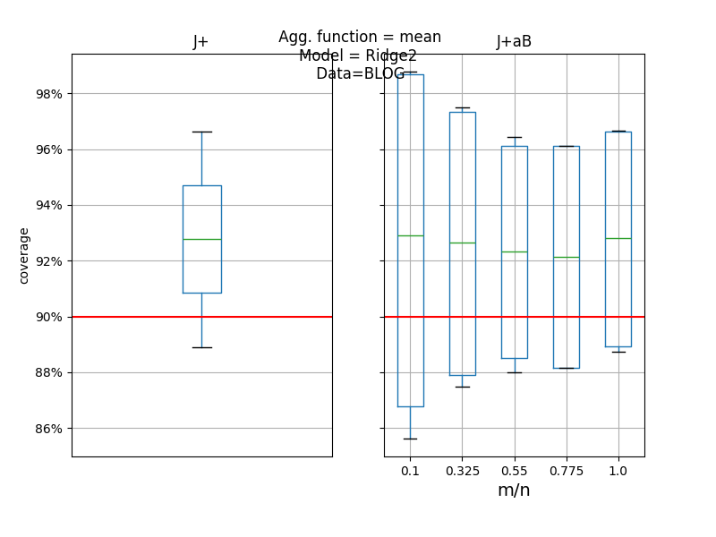
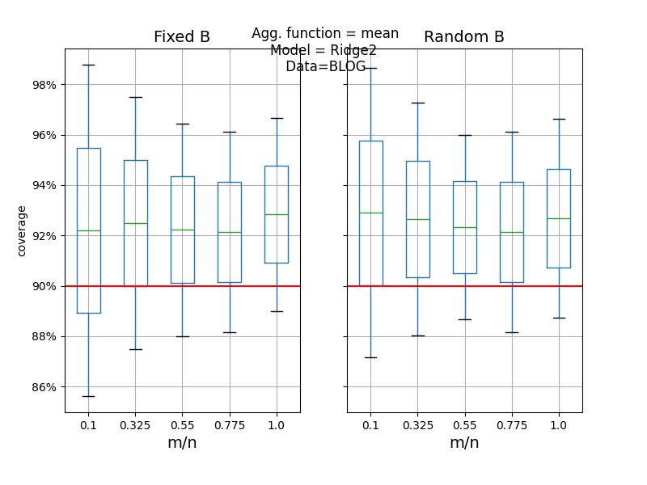
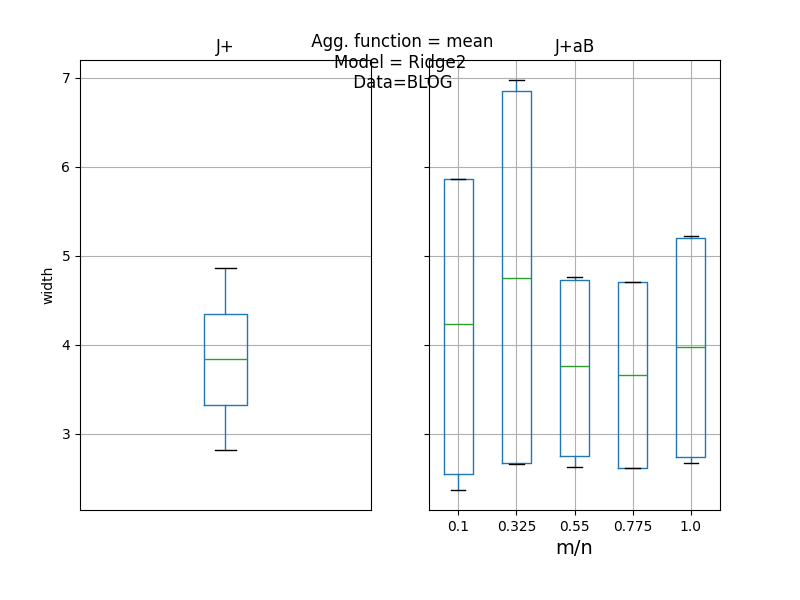
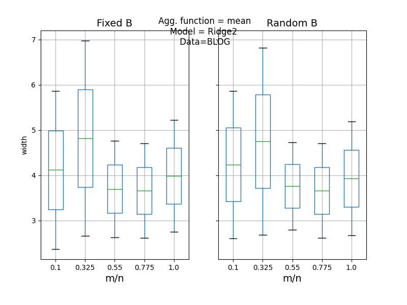

Note
Click here to download the full example code
Predictive inference is free with the Jackknife+-after-Bootstrap, Kim et al. (2020)¶
JackknifeAfterBootstrapRegressor and
CrossConformalRegressor are used to
reproduce the simulations by Kim et al. (2020) [1] in their article
which introduces the jackknife+-after-bootstrap method.
For a given model, the simulation fits MAPIE regressors with jackknife+ and jackknife+-after-bootstrap methods, on different resamplings of a data set loaded from 'https://archive.ics.uci.edu/', and compares the coverage levels and the width means of the PIs.
In order to reproduce results from the tutorial notebook of [1], we
implemented their regression model Ridge2, a variant of sklearn.Ridge
with an adaptive regularization parameter (other models can also be tested).
We compare jackknife+ and jackknife+-after-bootstrap, with fixed and random
numbers of bootstraps, for a given training set of size n, and different
resampling sets of size m, following the discussion in [1].
This simulation is carried out to assert that the jackknife+ and jackknife+-after-bootsrap methods implemented in MAPIE give the same results than [1], and that the targeted coverage level is obtained.
[1] Byol Kim, Chen Xu, and Rina Foygel Barber. "Predictive Inference Is Free with the Jackknife+-after-Bootstrap." 34th Conference on Neural Information Processing Systems (NeurIPS 2020).




Out:
<class 'pandas.core.frame.DataFrame'>
Index: 22 entries, 0 to 21
Data columns (total 8 columns):
# Column Non-Null Count Dtype
--- ------ -------------- -----
0 itrial 22 non-null int64
1 estimator 22 non-null object
2 method 22 non-null object
3 coverage 22 non-null float64
4 width 22 non-null float64
5 m 22 non-null int64
6 agg_function 22 non-null object
7 confidence_level 22 non-null float64
dtypes: float64(3), int64(2), object(3)
memory usage: 1.5+ KB
None
from __future__ import annotations
from io import BytesIO
from typing import Any, Optional, Tuple
from zipfile import ZipFile
import matplotlib.pyplot as plt
import matplotlib.ticker as mtick
import numpy as np
import pandas as pd
import requests
from numpy.typing import ArrayLike, NDArray
from sklearn.base import BaseEstimator, RegressorMixin
from sklearn.linear_model import Ridge
from sklearn.model_selection import train_test_split
from mapie.metrics.regression import (
regression_coverage_score,
regression_mean_width_score,
)
from mapie.regression import CrossConformalRegressor, JackknifeAfterBootstrapRegressor
from mapie.subsample import Subsample
def get_X_y() -> Tuple[NDArray, NDArray]:
"""
Downloads the `blog` dataset from a zip file on the UCI Machine Learning
website, and returns X and y, which are respectively the explicative
data and the labels.
Returns
-------
Tuple[NDArray, NDArray] of shapes
(n_samples, n_features) and (n_samples,)
Explicative data and labels
"""
website = "https://archive.ics.uci.edu/"
page = "ml/machine-learning-databases/"
folder = "00304/"
zip_folder = "BlogFeedback.zip"
csv_file = "blogData_train.csv"
url = website + page + folder + zip_folder
response = requests.get(url)
zipfile = ZipFile(BytesIO(response.content))
df = pd.read_csv(zipfile.open(csv_file)).to_numpy()
X = df[:, :-1]
y = np.log(1 + df[:, -1])
return (X, y)
class Ridge2(RegressorMixin, BaseEstimator):
"""
Little variation of Ridge proposed in [1].
Rectify alpha on the training set svd max value.
Parameters
----------
ridge_mult : float
Multiplicative factor such that the alpha factor of the `Ridge` model
fitted by `Ridge2` is the squared maximum eigenvalue of the training
set times `ridge_mult`.
"""
def __init__(self, ridge_mult: float = 0.001) -> None:
self.ridge_mult = ridge_mult
self.__name__ = "Ridge2"
def fit(self, X: NDArray, y: Optional[NDArray] = None) -> Ridge2:
"""
Fit Ridge2.
Parameters
----------
X : NDArray of shape (n_samples, n_features)
Training data.
y : NDArray of shape (n_samples,)
Training labels.
Returns
-------
Ridge2
The model itself.
"""
alpha = self.ridge_mult * np.linalg.svd(X, compute_uv=False).max() ** 2
self.ridge2 = Ridge(alpha=alpha).fit(X=X, y=y)
return self
def predict(self, X: ArrayLike) -> NDArray:
"""
Predict target on new samples.
Parameters
----------
X : ArrayLike of shape (n_samples, n_features)
Test data.
Returns
-------
NDArray of shape (n_samples, )
Predictions on test data
"""
return self.ridge2.predict(X)
def compute_PIs(
estimator: BaseEstimator,
X_train: NDArray,
y_train: NDArray,
X_test: NDArray,
method: str,
cv: Any,
confidence_level: float,
agg_function: Optional[str] = None,
random_state: int = 1,
) -> pd.DataFrame:
"""
Train and test a model with a MAPIE method,
and return a DataFrame of upper and lower bounds of the predictions
on the test set.
Parameters
----------
estimator : BaseEstimator
Base model to fit.
X_train : NDArray
Features of training set.
y_train : NDArray
Target of training set.
X_test : NDArray
Features of testing set.
method : str
Method for estimating prediction intervals.
cv : Any
Strategy for computing conformity scores.
confidence_level : float
target coverage level.
agg_function: str
'mean' or 'median'.
Function to aggregate the predictions of the B estimators.
random_state: int
The random state
Returns
-------
pd.DataFrame
DataFrame of upper and lower predictions.
"""
if cv == -1:
mapie_estimator = CrossConformalRegressor(
estimator=estimator,
confidence_level=confidence_level,
method=method,
cv=cv,
n_jobs=-1,
random_state=random_state,
)
else:
mapie_estimator = JackknifeAfterBootstrapRegressor(
estimator=estimator,
confidence_level=confidence_level,
method=method,
resampling=cv,
n_jobs=-1,
aggregation_method=agg_function,
random_state=random_state,
)
mapie_estimator = mapie_estimator.fit_conformalize(X=X_train, y=y_train)
_, y_pis = mapie_estimator.predict_interval(X=X_test)
PI = np.c_[y_pis[:, 0, 0], y_pis[:, 1, 0]]
return pd.DataFrame(PI, columns=["lower", "upper"])
def get_coverage_width(PIs: pd.DataFrame, y: NDArray) -> Tuple[float, float]:
"""
Computes the mean coverage and width of the predictions intervals of a
DataFrame given by the `compute_PIs` function
Parameters
----------
PIs : pd.DataFrame
DataFrame returned by `compute_PIs``, with lower and upper bounds of
the PIs.
y : NDArray
Targets supposedly covered by the PIs.
Returns
-------
(coverage, width) : Tuple[float, float]
The mean coverage and width of the PIs.
"""
coverage = regression_coverage_score(
y_true=y, y_intervals=np.stack((PIs["lower"], PIs["upper"]), axis=-1)
)[0]
width = regression_mean_width_score(
y_intervals=np.stack((PIs["lower"], PIs["upper"]), axis=-1)[:, :, np.newaxis]
)[0]
return (coverage, width)
def B_random_from_B_fixed(
B: int, train_size: int, m: int, itrial: int = 0, random_state: int = 98765
) -> int:
"""
Generates a random number from a binomial distribution.
Parameters
----------
B : int
Fixed B, parameter of the binomial distribution
train_size : int
Training set size
m : int
Resampling set size
itrial : int
Number of the trial
random_state
Base random state (fixed according to [1].)
Returns
-------
int
Integer drawn according to
Binomial(B/(1-1/(train_size+1))^m),(1-1/(train_size+1))^m),
where B, train_size and m are parameters.
"""
np.random.seed(random_state + itrial)
return np.random.binomial(
int(B / (1 - 1.0 / (1 + train_size)) ** m),
(1 - 1.0 / (1 + train_size)) ** m,
)
def comparison_JAB(
model: BaseEstimator = Ridge2(),
agg_function: str = "mean",
confidence_level: float = 0.9,
trials: int = 10,
train_size: int = 200,
boostrap_size: int = 10,
B_fixed: int = 50,
random_state: int = 98765,
) -> pd.DataFrame:
"""
Launch trials of jackknife-plus and jackknife-plus_after_boostrap,
with B fixed and random, for a given number of resample size and a given
number of trials, and returns the results as a DataFrame,
Parameters
----------
model : BaseEstimator
Base model. By default, Ridge2.
agg_function: str
Aggregation function to test.
confidence_level : float
target coverage level.
trials: int
Number of trials launch for a given boostrap set size.
train_size : int
Size of the train set.
bootstrap_size : int
Number of boostrap sizes to test,
uniformly distributed between 10 and 100%
of the train set size.
B_fixed : int
Number of bootstrap samples in J+aB is drawn as
B ~ Binomial(int(B_fixed/(1-1/(n+1))^m),(1-1/(n+1))^m),
where n is the training set size, and m the resampling set size.
random_state : int
Random state. By default, 98765 (from [1]).
Returns
-------
pd.DataFrame
DataFrame with columns:
- itrial : the number of the trial
- model : the estimator's name
- method : jackknife+ of jackknife+-after-bootsrap
- coverage : PIs' coverage
- width : mean PI's width
- m : the resampling set size
- agg_function: aggregation method
"""
results = pd.DataFrame(
columns=["itrial", "estimator", "method", "coverage", "width", "m"],
index=np.arange(trials * (2 * boostrap_size + 1)),
)
(X, y) = get_X_y()
m_vals = np.round(train_size * np.linspace(0.1, 1, num=boostrap_size)).astype(int)
result_index = 0
for itrial in range(trials):
X_train, X_test, y_train, y_test = train_test_split(
X, y, train_size=train_size, random_state=random_state + itrial
)
PIs = PIs = compute_PIs(
estimator=model,
X_train=X_train,
y_train=y_train,
X_test=X_test,
method="plus",
cv=-1,
confidence_level=confidence_level,
agg_function=agg_function,
)
(coverage, width) = get_coverage_width(PIs, y_test)
results.iloc[result_index, :] = [
itrial,
type(model).__name__,
"J+",
coverage,
width,
0,
]
result_index += 1
for i_m, m in enumerate(m_vals):
# J+aB, random B
B_random = B_random_from_B_fixed(B_fixed, train_size, m, itrial=i_m)
subsample_B_random = Subsample(
n_resamplings=B_random,
n_samples=m,
replace=True,
random_state=random_state,
)
PIs = compute_PIs(
estimator=model,
X_train=X_train,
y_train=y_train,
X_test=X_test,
method="plus",
cv=subsample_B_random,
confidence_level=confidence_level,
agg_function=agg_function,
)
(coverage, width) = get_coverage_width(PIs, y_test)
results.iloc[result_index, :] = [
itrial,
type(model).__name__,
"J+aB Random B",
coverage,
width,
m,
]
result_index += 1
# J+aB, fixed B
subsample_B_fixed = Subsample(
n_resamplings=B_fixed,
n_samples=m,
replace=True,
random_state=random_state,
)
PIs = PIs = compute_PIs(
estimator=model,
X_train=X_train,
y_train=y_train,
X_test=X_test,
method="plus",
cv=subsample_B_fixed,
confidence_level=confidence_level,
agg_function=agg_function,
)
(coverage, width) = get_coverage_width(PIs, y_test)
results.iloc[result_index, :] = [
itrial,
type(model).__name__,
"J+aB Fixed B",
coverage,
width,
m,
]
result_index += 1
results["agg_function"] = agg_function
results["confidence_level"] = confidence_level
results = results.astype(
{
"itrial": int,
"estimator": str,
"method": str,
"coverage": float,
"width": float,
"m": int,
"agg_function": str,
}
)
return results
def plot_results(results: pd.DataFrame, score: str) -> None:
"""
Compares the desired score (i.e. coverage or width) between the Jackknife+
and Jackknife+-after-Bootstrap and between fixed and random B parameter
as in [1] simulations.
Parameters
----------
results : pd.DataFrame
DataFrame returned by comparison_JAB.
score: str
'coverage' or 'width'
"""
res = results.copy()
res["fixed_random"] = res["method"].str.split("[' ']").str.get(1)
res["method"] = res["method"].str.split().str.get(0)
m_vals = res["m"].values
res["ratio"] = m_vals / m_vals.max()
data_J = res.loc[res.method == "J+", ["ratio", score]]
data_JaB = res.loc[res.method == "J+aB", ["ratio", score]]
data_fix = res.loc[res.fixed_random == "Fixed", ["ratio", score]]
data_random = res.loc[res.fixed_random == "Random", ["ratio", score]]
confidence_level = pd.unique(results["confidence_level"])[0]
# plot the comparison between J+ vs J+AB
fig, axes = plt.subplots(1, 2, figsize=(8, 6), sharey=True)
data_J.boxplot(by="ratio", ax=axes[0])
data_JaB.boxplot(by="ratio", ax=axes[1])
if score == "coverage":
axes[0].axhline(y=confidence_level, color="red")
axes[1].axhline(y=confidence_level, color="red")
xticks = mtick.PercentFormatter(1, decimals=0)
axes[0].yaxis.set_major_formatter(xticks)
axes[0].set_title("J+")
axes[1].set_title("J+aB")
axes[0].set_xticks([])
axes[0].set_xlabel("")
axes[1].set_xlabel("m/n", fontsize=14)
axes[0].set_ylabel(score)
fig.suptitle(
f"\n Agg. function = {res['agg_function'].unique()[0]}"
+ f"\nModel = {res.estimator.unique()[0]}"
+ "\n Data=BLOG"
)
plt.show()
# plot the comparison between random vs fixed B
fig, axes = plt.subplots(1, 2, figsize=(8, 6), sharey=True)
data_fix.boxplot(by="ratio", ax=axes[0])
data_random.boxplot(by="ratio", ax=axes[1])
axes[0].set_title("Fixed B", fontsize=14)
axes[1].set_title("Random B", fontsize=14)
if score == "coverage":
axes[0].axhline(y=confidence_level, color="red")
axes[1].axhline(y=confidence_level, color="red")
axes[0].yaxis.set_major_formatter(xticks)
axes[0].set_ylabel(score)
axes[1].set_ylabel("")
for ax in axes:
ax.set_xlabel("m/n", fontsize=14)
fig.suptitle(
f"\n Agg. function = {res['agg_function'].unique()[0]}"
+ f"\nModel = {res.estimator.unique()[0]}"
+ "\n Data=BLOG"
)
plt.show()
if __name__ == "__main__":
results_coverages_widths = comparison_JAB(
model=Ridge2(),
confidence_level=0.9,
trials=2,
train_size=40,
boostrap_size=5,
B_fixed=20,
)
print(results_coverages_widths.info())
plot_results(results_coverages_widths, "coverage")
plot_results(results_coverages_widths, "width")
Total running time of the script: ( 1 minutes 6.899 seconds)
Download Python source code: plot_kim2020_simulations.py